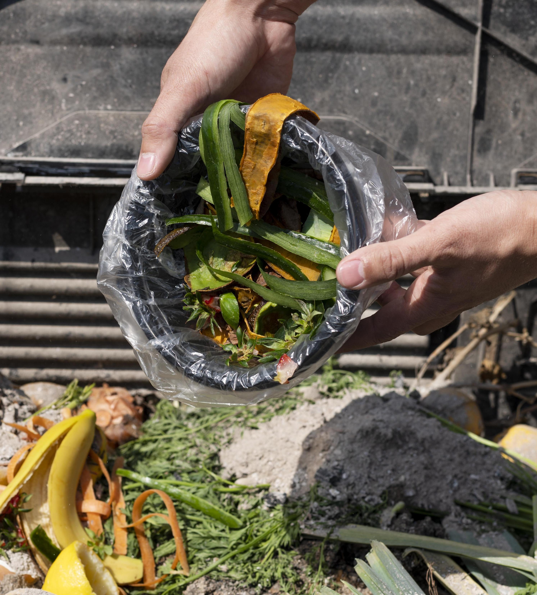
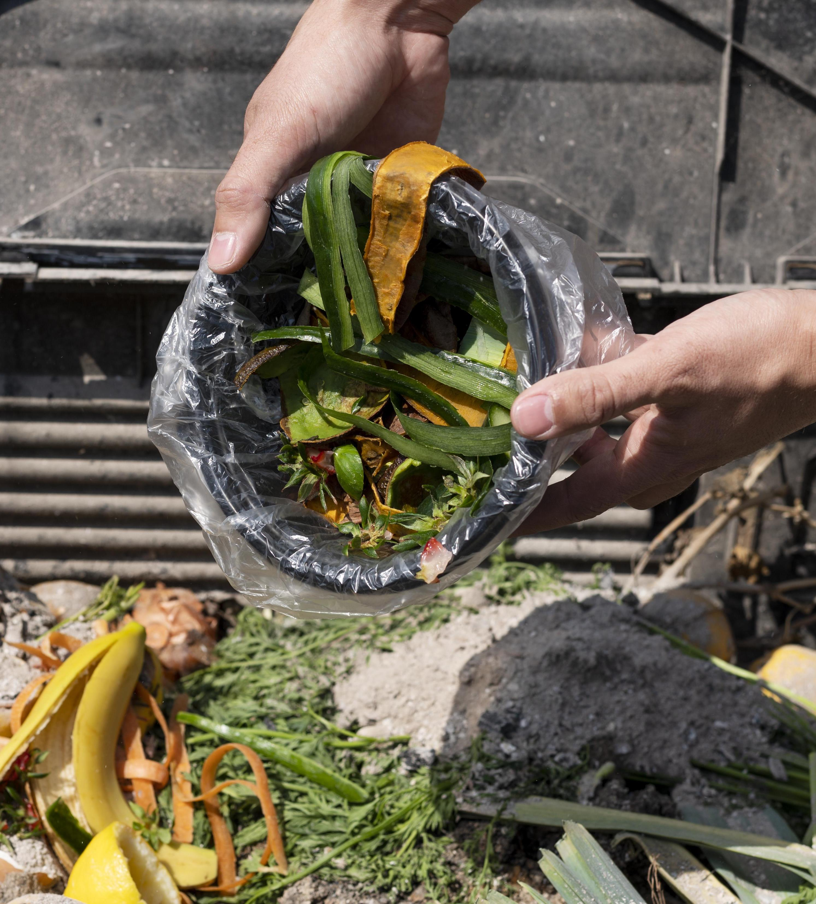

Composting
Composting is an essential part of giving back to our environment. By diverting organic waste from landfills, composting can significantly reduce the amount of waste that ends up polluting our planet. Instead, you can use this waste to create nutrient-rich compost that will help your garden thrive. Composting is a simple process that anyone can do. All you need is a compost bin or pile, some organic waste, and a little bit of time. You can also donate compost to our community gardens such as the Wylde Center. By composting, you can reduce your carbon footprint, improve soil quality, and help create a more sustainable future for all of us.
 
